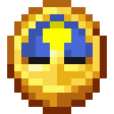
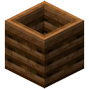

Getting Started
A first model fits in a few blocks: a Model Core, an Embedding Table and some Signal Cable. It learns what the blocks around you do next. A Forecaster puts that to work: once its forecasts hold, your furnaces run four times as fast.
Materials
Tensor Casing is the shell of every machine; Weight Crystal holds learned numbers, so machines with weights need them.
 Crafting
Crafting


 Crafting
Crafting


Then craft the Model Core, a stack of cables and a Forecast Dataset: endless lines of crops growing and machines at work, to learn from.
Crafting


 Crafting (Shapeless)
Crafting (Shapeless)


Machines are made in a Fabricator. With no photomask in it, it makes the Embedding Table from a casing, a Wafer and a weight crystal.
Crafting


 Crafting (Shapeless)
Crafting (Shapeless)


Build it
- Place the Model Core. Its front turns toward you: tokens come out of it.
- Lay a cable from the Core's front to a free spot a few blocks away.
- Place the Embedding Table against the end of that cable. It snaps into the flow: its back reads the cable and its front points away.
- Lay a cable from the table's front back to any other face of the Core: its sides, its top or its back. That is where the model's scores go in.
- Open the table and set Width to V (vocab).

The two cables never touch, so they form two separate networks: one carries tokens to the table, the other carries the table's scores back.
Train it
Open the Core and put the Forecast Dataset in one of its Data slots. Switch to Train and press Train. Two curves fall: the loss on practice, and the loss on the test, which only uses lines the model never practised on.
Each line in the dataset is one block, looked at again and again. A furnace's line is how far it is through the item it
is making, from a just begun to h nearly done, then round again: abcdefghabcdefgh. A crop's line is its age at
every look, from 0 to 7. An Embedding Table set to V scores the next look from the one before it, and for a machine
the look before all but settles the next. When Forecasting on the Tests tab gets below 0.21, the model is ready.
Save it
Craft a Checkpoint, put it in the Core's checkpoint slot and press Save to checkpoint. The Core tests the model on every benchmark and keeps it, scores and all, in the crystal. The machines can go on training; the checkpoint keeps this moment.
Crafting

Run your furnaces ahead
Craft a Forecaster and place it among your furnaces, smokers or blast furnaces: within four blocks, on its own level or one above or below. Put the checkpoint in its Model slot, and keep the furnaces fed and fuelled.
Crafting


The Forecaster looks at each machine eight times an item and writes down how far it got. Once the machines have made about a dozen items at their own pace, it checks the model against what they did. If the progress the model expects is within 11% of the progress there was, it runs them four looks for every one: the model draws each machine's next looks, and the machine works through them. Within 25%, two. The Forecaster tells the rest, crops included.
Further
- Better models need machines built from designs: wire them yourself on a Bench, or go looking for the old ones in the ruins.
- Storage keeps what your furnaces make: a Port under each one carries it onto drives, and a Storage Terminal finds it again.
- Agents run programs you click together: they mine, carry, build and sort, and models fill in where learning beats a rule.
- Look at any machine to see its name, its output shape (or what is wrong with it) and what the face you are looking at does.
- Sneak-use a machine's face to point its output there.
- Training runs on its own threads. Place Training Accelerator blocks against the Core to give it more, and keep them cool.

 Iron IngotCopper IngotRedstone DustTensor CasingLapis LazuliGlassWeight CrystalGold IngotBlock of RedstoneModel CoreSignal CableWhite Signal CableOrange Signal CableMagenta Signal CableLight Blue Signal CableYellow Signal CableLime Signal CablePink Signal CableGray Signal CableLight Gray Signal CableCyan Signal CablePurple Signal CableBlue Signal CableBrown Signal CableGreen Signal CableRed Signal CableBlack Signal CableWater BucketPaperClockForecast DatasetLanternPistonFurnaceFabricatorSandGlass PaneWafer
Iron IngotCopper IngotRedstone DustTensor CasingLapis LazuliGlassWeight CrystalGold IngotBlock of RedstoneModel CoreSignal CableWhite Signal CableOrange Signal CableMagenta Signal CableLight Blue Signal CableYellow Signal CableLime Signal CablePink Signal CableGray Signal CableLight Gray Signal CableCyan Signal CablePurple Signal CableBlue Signal CableBrown Signal CableGreen Signal CableRed Signal CableBlack Signal CableWater BucketPaperClockForecast DatasetLanternPistonFurnaceFabricatorSandGlass PaneWaferThe Model Core. Tokens leave through its front; scores come back through its top.
The Embedding Table, Width set to V.
Amethyst ShardCheckpointComposterForecasterThe Forecaster, with a model that passes Forecasting.